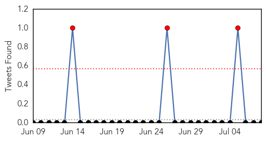
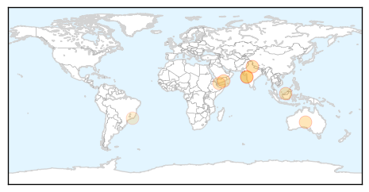

West Nile Virus
30-Day Web Trend
3 alerts, 0 warnings

30-Day Twitter Trend
0 alerts, 0 warnings

Article Locations

Article Confidences

Top Articles:
- 0.993
- First Human Case of West Nile This Year
- 0.977
- Montana reports first human West Nile virus case of 2015
- 0.976
- West Nile Virus vaccine to enter safety trials in humans
- 0.973
- Year’s third case of West Nile virus confirmed in Oklahoma
- 0.956
- Take action against West Nile threat
- 0.934
- West Nile virus vaccine in horses
- 0.830
- First Colorado case of West Nile in county
- 0.825
- First mosquitoes test positive for West Nile in Colorado this year
- 0.570
- Bird in Benicia Tested Positive for West Nile Virus
Top Tweets:
-
No tweets found for Jul 08, 2015
Dengue Fever
30-Day Web Trend
6 alerts, 9 warnings

30-Day Twitter Trend
3 alerts, 0 warnings

Article Locations

Article Confidences

Top Articles:
- 0.981
- LHMC, other hospitals gear up to tackle dengue
- 0.920
- Simplifying the deadly ‘leptospirosis’
- 0.872
- Business Intelligence on 205 countries
- 0.859
- Lepto rears ugly head in city again
- 0.821
- Study explains how dengue virus adapts as it travels
- 0.808
- Don’t wait until it’s a case of once bitten twice shy - The Star Says
- 0.736
- Aden’s overwhelmed hospitals turn into hospices
- 0.728
- Play Part To Combat Rise of Dengue, Health Experts Tell Public
- 0.517
- 'Vaccinated' mosquitoes released in Rio to combat dengue -The Tico Times
Top Tweets:
-
No tweets found for Jul 08, 2015